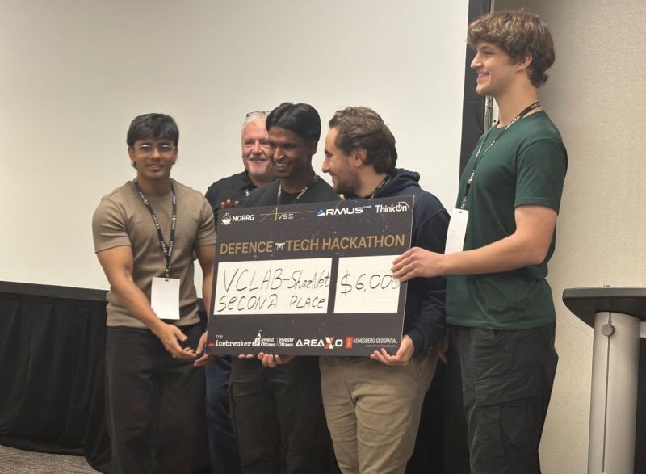

VCLab Shaz-NET
🏆 2nd Place - Ottawa Defense Tech HackathonA fast, modular acoustic ML platform that identifies and detects drones in real time using only a laptop microphone. Built an audio pipeline on log-Mel spectrograms feeding CNN- and transformer-based classifiers, reaching ~95% accuracy on the evaluation set, with a clean UI showing color-coded temporal activity.
View on Devpost →